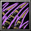

織田信長
被譽為“風雲兒”的絕世英雄，開創了嶄新的時代。年輕時特立獨行被人笑為“傻瓜”但是正是這傻瓜統一尾張全境，並在田樂狹間趁大風雨夜襲殺死西進的今川義 元，即為“桶狹間之戰”。信長隨即與家康結盟保護側翼，居成於岐阜，確立“天下布武”的雄心。之後擊敗三好氏，奉足立義昭繼任幕府將軍，控制日本中心。不 久兩人交惡，與義昭組織的“信長包圍網”廝殺數年，期間擊敗淺井、朝倉，火燒聖山比叡，被咒罵為“佛敵”“第六天魔王”。其後在長篠用火槍擊敗天下無敵的 武田騎兵，次年築安土城，稱為“安土時代”意味戰國時代終結。兩年後，以“鐵甲船”大破縱橫瀨戶內海的毛利水軍。在天下統一之際遭明智光秀謀反，自焚於京 都本能寺，雄心壯志付之一炬。
力量型近戰英雄
肉博戰：Ａ
法術 ：Ａ
輔助 ：Ｄ
最擅長一對多人
力量 : 29 (+ 2.72 ) ( 主要 )
靈活 : 29 (+ 2.10 )
智慧 : 23 (+ 2.00 )
 Ｄ[被動] 天下布武
當織田信長殺死一個英雄時，即可讓全軍增加15%移動速度以及20%攻擊速度，持續10秒。
Ｄ[被動] 天下布武
當織田信長殺死一個英雄時，即可讓全軍增加15%移動速度以及20%攻擊速度，持續10秒。
 Ｗ[主動] 遠雷遙
對指定的方向使用火繩銃攻擊，讓距離1500內所有敵人受到[200/300/400/500]的傷害。區域範圍100。
Ｗ[主動] 遠雷遙
對指定的方向使用火繩銃攻擊，讓距離1500內所有敵人受到[200/300/400/500]的傷害。區域範圍100。
消耗法力[100/110/120/130]，等待時間[9/7/5/3]秒。

Ｅ[主動] 厄災之棘
讓範圍530內地面穿出2波厄災之棘；每波造成敵人[90/140/210/270]點傷害 並暈眩[1/1.5/2.0/2.5]秒。
自身獲得額外[80/100/120/160]點攻擊力， 持續4秒。
消耗 法力[160/180/200/220]，等待時間25秒。
Ｒ[被動] 壓切
讓手上的名刀‧ 壓切更具殺傷力。增加[12/24/36/48]%攻擊速度以及在攻擊時有20%的機會，造成[2/2.5/3/3.5]倍的傷害。
Ｔ[主 動] 障壁深紅
讓身邊環繞著障壁深紅的毀滅力量。獲得魔法免疫， 並每秒對範圍400內的敵人及建築物造成[400/700/1000]點物理傷害。
持續8秒，使用期間可以施法與攻擊。
消耗法力[200/250]，等待時間105秒。